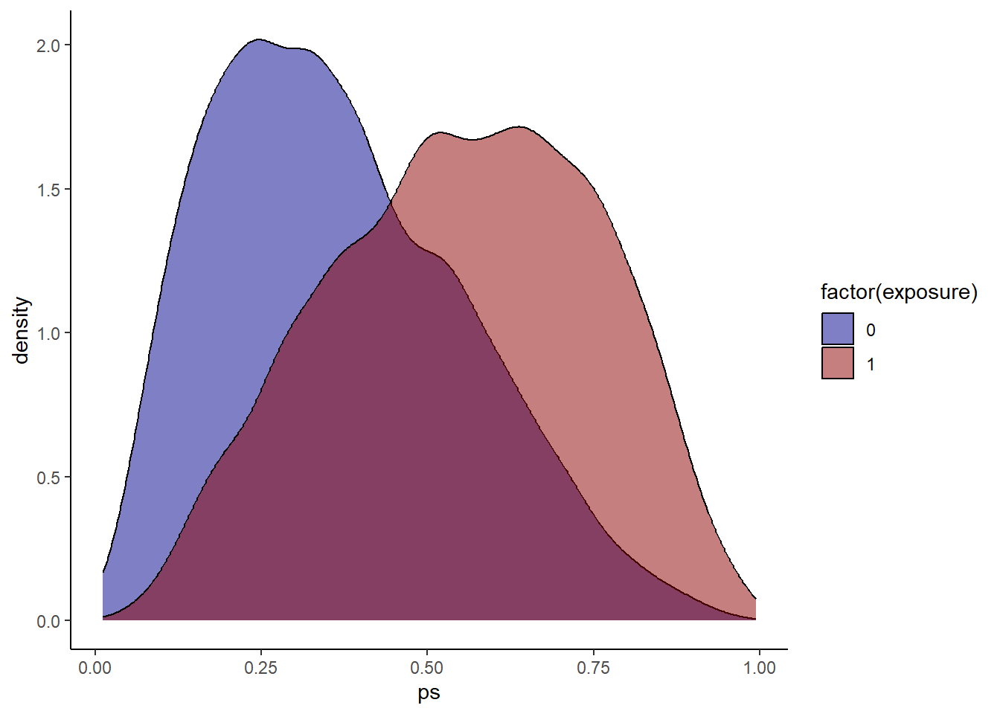
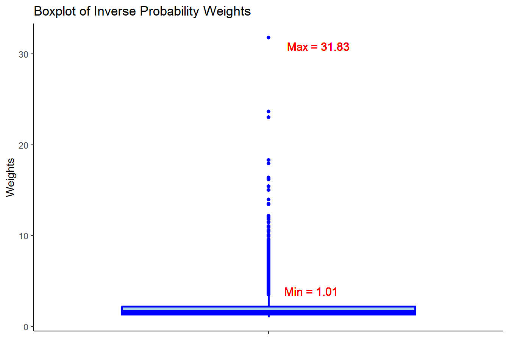
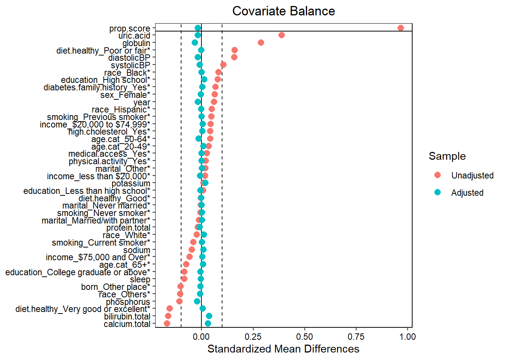

11 Propensity score
Compare
Compare the measures of association with those obtained from a regular propensity score method, so that we can compare the estimates.
11.1 Fitting PS model to obtain OR
11.1.1 Create propensity score formula
covform <- paste0(investigator.specified.covariates, collapse = "+")
ps.formula <- as.formula(paste0("exposure", "~", covform))
ps.formula
#> exposure ~ age.cat + sex + education + race + marital + income +
#> born + year + diabetes.family.history + medical.access +
#> smoking + diet.healthy + physical.activity + sleep + uric.acid +
#> protein.total + bilirubin.total + phosphorus + sodium + potassium +
#> globulin + calcium.total + systolicBP + diastolicBP + high.cholesterolOnly use investigator specified covariates to build the formula.
11.1.2 Fit PS model
require(WeightIt)
W.out <- weightit(ps.formula,
data = hdps.data,
estimand = "ATE",
method = "ps")Use that formula to estimate propensity scores.
11.1.3 Obtain PS

Check propensity score overlap in both exposure groups. Similar as before?
11.1.4 Obtain Weights

Check the summary statistics of the weights to assess whether there are extreme weights. Less extreme weights now?
11.1.5 Assessing balance

Assess balance against SMD 0.1. Still balanced?
11.1.6 Set outcome formula
out.formula <- as.formula(paste0("outcome", "~", "exposure"))
out.formula
#> outcome ~ exposureWe are again using a crude weighted outcome model here.
11.1.7 Obtain OR from unadjusted model
fit <- glm(out.formula,
data = hdps.data,
weights = W.out$weights,
family= binomial(link = "logit"))
fit.summary <- summary(fit)$coef["exposure",
c("Estimate",
"Std. Error",
"Pr(>|z|)")]
fit.ci <- confint(fit, level = 0.95)["exposure", ]
fit.summary_with_ci.ps <- c(fit.summary, fit.ci)
round(fit.summary_with_ci.ps,2)
#> Estimate Std. Error Pr(>|z|) 2.5 % 97.5 %
#> 0.68 0.04 0.00 0.61 0.7611.2 Fitting crude model to obtain OR
Crude association
Here we estimate the crude association between the exposure and the outcome.
fit <- glm(out.formula,
data = hdps.data,
family= binomial(link = "logit"))
fit.summary <- summary(fit)$coef["exposure",
c("Estimate",
"Std. Error",
"Pr(>|z|)")]
fit.ci <- confint(fit, level = 0.95)["exposure", ]
fit.summary_with_ci.crude <- c(fit.summary, fit.ci)
round(fit.summary_with_ci.crude,2)
#> Estimate Std. Error Pr(>|z|) 2.5 % 97.5 %
#> 0.73 0.05 0.00 0.63 0.84No adjustment at all!